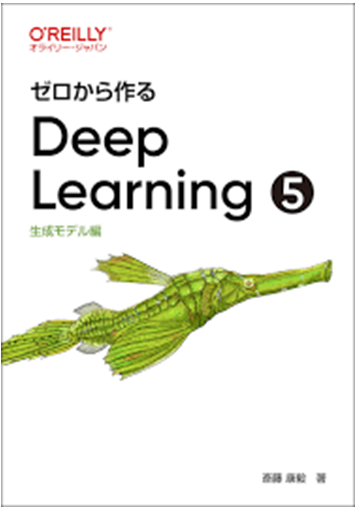
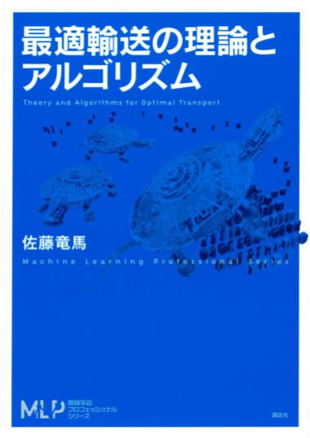
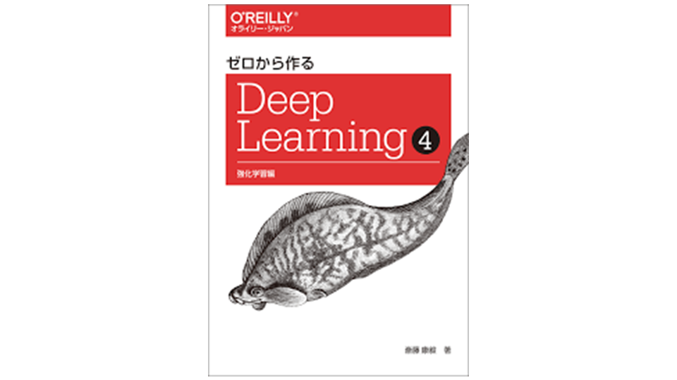

ベイズ推論による機械学習入門
潜在変数やグラフィカルモデル、事後分布といったベイズ推論の基本から、共役分布や近似法までを解説。ベイズ推論では、データの生成過程を記述し、事後分布の計算によって学習していることが理解できる。そして、解析的に計算できない場合として、事後分布の計算を同時分布の計算に置き換えたり(ELBO・EMアルゴリズム)、平均場近似したりする(ギブズサンプリング等)ことが見通し良く分る。2025/04あたりに読了
2025/04あたりに読了Machine Learning
とりあえず簡単に紹介文を書きました。そのうち更新します。
Short introductions for now — to be updated later.
Loved Books
潜在変数やグラフィカルモデル、事後分布といったベイズ推論の基本から、共役分布や近似法までを解説。ベイズ推論では、データの生成過程を記述し、事後分布の計算によって学習していることが理解できる。そして、解析的に計算できない場合として、事後分布の計算を同時分布の計算に置き換えたり(ELBO・EMアルゴリズム)、平均場近似したりする(ギブズサンプリング等)ことが見通し良く分る。2025/04あたりに読了
2025/04あたりに読了ベイズ推論による機械学習入門において、特に解析的に計算できない場合に着目した本。事後分布の計算を期待値の計算という形で統一的に理解できる。そして、期待値をいかにサンプリングで求めるかの手法を概説。特にVAEについて、Encoderが事後分布の関数近似(いわゆる償却推論)であり、ベイズ推論的な立場のモデリングをしているのがDecoderであることがad hocな理解を超えて俯瞰的に見れたのが面白かった。2025/05あたりに読了
2025/05あたりに読了ベイズ推論では観測変数(=データ)も潜在変数もパラメタも全て、分布からサンプリングした値として計算する。ここで、回帰モデルy = f(x; w)を考えて重み分布について周辺化したらどうなるだろうか？回帰モデルであることは変わらないが、重みには依存しなくなる。これが、ガウス過程。回帰モデルの関数系fや重みwはカーネル関数に集約され、その行列K (kernelで距離を測った距離行列といってもいい)の計算によって回帰モデルが達成される。"無限次元の正規分布”や無限長の線形和による回帰モデルといった説明はこのカーネル関数の概念を指差している。
導出からベイズ推論でのタスク(潜在変数への次元削減)は当然に実行可能である。唯一Ｋの計算時間に欠点があり、その短縮方法まで概説。2025/05あたりに読了
2025/05あたりに読了この本は拡散モデルを支える背景の最も重要な性質を証明し、その周辺の知識とともに整理されている。特に拡散モデルがスコアを学習している点、そして以下にのべる2つの性質が効率的なアルゴリズムにつながっているという理解が重要だった。
拡散モデルはDenosing Score Matching (加えたノイズを除去する自己教師あり学習)を学習する。損失関数のターゲットはノイズではあるものの数学的にこれがノイズ付きデータ分布のスコアに収束する。これを利用したのが拡散モデル。拡散モデルはEuler-Maruyama法で離散化した多変数オルシュタインウーレンベック過程。drift項とnoise項の係数を工夫して設定することで、①tステップ目のベクトルを直接サンプリングでき②事後分布が解析的に計算できる、という２つの性質が成立。この①②により拡散モデルの効率的なアルゴリズムが成立していることが理解できる。
SDEは対応するFokker Plankの式を介して確率フローODEに書き換えることができる。これは確率変数が決定論的に推移する。
後半では拡散モデルの利点欠点や応用例などが紹介。
2026/1読了サンプリングや拡散モデル、Score Based Modelでは共通して確率微分方程式が背景に存在している。それの入門として最適だった。
Langevin方程式のノイズ項をブラウン運動{Wt}によって定義。そして、伊藤積分によって、その積分を定義し、確率変数の時間発展の積分方程式を形式的に微分形式で書いたのがSDE。各時刻でランダムに決まる変数の積分である伊藤積分は、その差分の和の極限値として定義される。被積分関数が定数なら階差数列の和として解析解がわかるがそれ以外は求められない。しかし、各項が正規分布に従い、高々その和でしかないのだから伊藤積分も正規分布に従う。そのため、期待値計算によって対応する確率分布は求めることができる。相した解析解の求まる例を復習紹介。
確率微分方程式の期待値計算を考えることによって確率分布の時間発展を記述するFokker Plank方程式を導出。それを定常分布と変数分離し、ODEに帰着したりボルツマン分布やシュレディンガー方程式と同じ形式の式が導出されることを見る。
4章以降はベイズモデル・ガウス過程・解析解が分かるブラウン運動の例やcall optionが数式とともに紹介されている。
2026/1読了
Variational Auto EncoderやDenoising Diffusion Probabilistic Modelの数式の導出から実装方法までを解説。特にDDPMはTステップあるノイズ付加の過程のELBOが結局は1ステップの事後分布の計算に帰着でき、それらを一様サンプリングによってランダムに学習させることで効率化できることがわかる。実装面では、time-embeddingという形でノイズを予測する関数を全ステップで統一したU-netというニューラルネットワークがテクニカルな部分。その発展として、ラベル付きデータもラベルをembeddingすれば学習できね？と発展し、Stable Diffusionの理解につながる。MLPシリーズで数式や原理を理解した後に読むのに最適な本。2025/06あたりに読了
2025/06あたりに読了
分布の間の距離を測る枠組みが最適輸送。輸送元から輸送先への輸送コストの総和の最小値OTとしてWasserstein距離を測る。このMongeの定式化では輸送元と輸送先の重みの合計が一致する拘束条件があるが、これを正則化として加えたソフトな拘束にしたのが不均衡最適輸送で、輸送元と輸送先が異なる空間だった場合は距離の構造を保つように２点の組について、輸送の前後での距離の差分としてコストを測り、これを最小化する。これも結局は最適輸送に帰着できる。
いずれの場合も、最適輸送の目的関数である総輸送コストにエントロピー項の正則化を加えた最適輸送問題をラグランジュ双対問題に変え、これをブロック座標降下法で計算する。これがシンクホーンアルゴリズム。
これをさらに高速化するために、距離を測る２分布を写像fによって押し出してから測るのがslice法。また、グラフ上のアルゴリズムでもOTを計算することができる。
確率分布の距離を測る方法としては最適輸送のほかにKLダイバージェンスやJSなどがあるが、それらはφダイバージェンス・積分確率距離というクラスに分類され、実は全てが２分布上の期待値の差を最大化するという敵対的定式化することができる。ルベーグ分解などの測度論が既知として出てきたので読むのが大変だった....Flow Matchingの確率パスの設計に用いられたり、直接バイオインフォの手法に使われたりと、研究の理解度が一段に深くなった。
構造生成モデルとオミクス解析について代表的な論文が解説されており、創薬AIに入門するうえで参考になる。また、化学系のデータに対する回帰モデルを比較することに関して、構造式・実験条件・スペクトルなど、様々な場合で議論されており、これをそのままトレースすれば研究に利用でき参考になるなと思った。ＳＨＡＰ値の説明が丁寧だったのと適用範囲・ベイズ最適化の適用ケースの説明が印象的だった。機械学習の計算方法についての説明は最小限であるものの、完結ながら要点を得ており、他の本との接続が容易だと思った。
グラフを入力とするタスクでグラフの情報(つまりedgeの集合V)を如何に活用するか、その工夫を行うのがGraph Neural Network。結局はMessage Passingアルゴリズムにおいて集約関数へ入力されるnodeの選択において利用される。またedgeの重みはnodeの埋め込みの内積のターゲットとして利用される。
以上のようにGNNがedgeについての事前知識を利用したnodeの埋込生成であることが理解できる。
しかし、分野全体として発展途上であるようで、そうした限界についても触れられている。
個人的にはscRNAseqのアルゴリズムの理解が進んだ点も面白かった。特にグラフスペクトル理論 2025/06あたりに読了
2025/06あたりに読了逐次意思決定過程の問題を解くのが強化学習。しかし、そもそも、どのようにして最適化問題として定式化するかで難航する。そのうち理論的に最も理解が進んでいるマルコフ決定過程を扱う。価値関数・行動価値関数・方策といった学習させる対象や、ベルマン作用素などが理解できる。そして、この作用素と収束性といった性質が全ての関連アルゴリズムの基礎になることが理解できる。
こうした基礎を踏まえた上ではDQNを始めとする関数近似も見通し良く理解できる。
マルコフ決定過程がギリ適用できるケースとして部分観測マルコフ過程があり、これは結局は信念状態のマルコフ過程になる。
これを逸脱したタスクを解く場合は定式化に様々なengineeringがあり、それらも紹介。2025/07あたりに読了
2025/07あたりに読了
強化学習のベルマン方程式の導出とその実装方法について書かれた本。価値反復法や方策反復, Q学習, TD法など様々あるが、全て環境のclassとエージェントのclassを用意し、状態遷移や行動選択、(行動)価値関数・方策の更新に対応するmethodを用意するだけで実装可能なことがわかる。Neural Networkの適用は単にエージェントクラス内の変数をNeural Networkのオブジェクトにするだけ。2025/07あたりに読了
2025/07あたりに読了LLMの開発インターンに応募するために一部勉強した。Attention機構は、入力プロンプトから辞書を作成し、今出力した単語(query)を見出し語(Key)と照らし合わせ、その意味(Value)を重ね合わせて次の単語の確率分布を計算する。こうするとQKVの演算やKV cacheなどが感覚的に理解できるようになり良かった。LLMの評価方法は意外にも単純で、問題セットを用意して人かLLMが点数付けして平均を取る。
他の部分もそのうち読みます。
Upcoming
多様体まわりだけ手っ取り早く理解しようと思ったら数学に敗北... 普通に通読しようと思う。取り合えず、集合の要素をパラメタで指定できたら、だいたい多様体ってことは分かった。